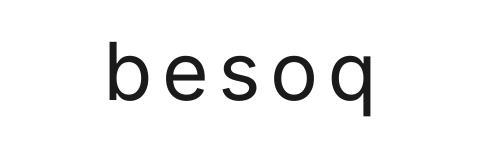
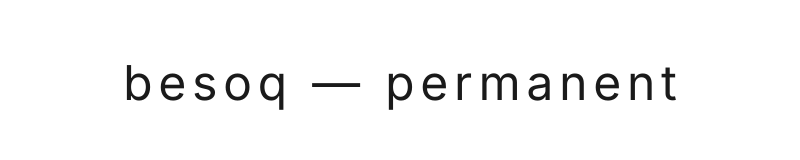
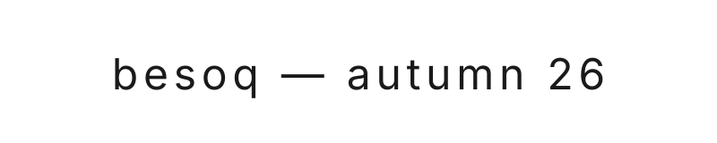
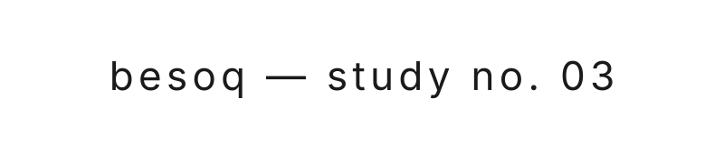
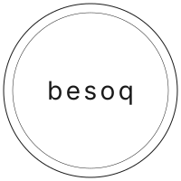
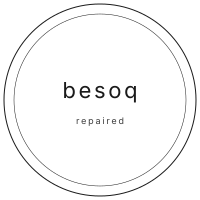
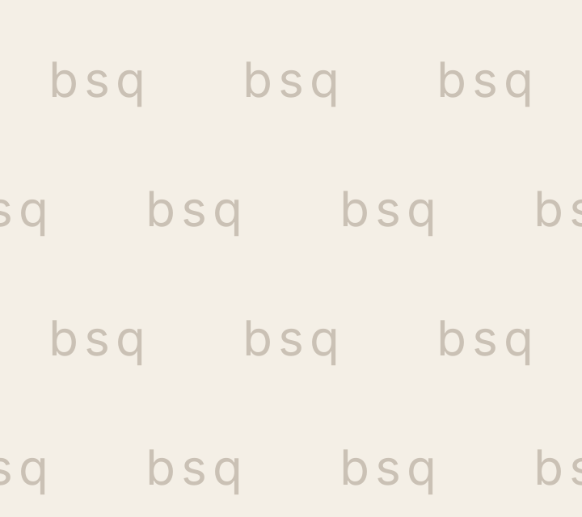

brand identity · v1.0 · may 2026
be so quiet.
besoq is a clothing brand built on restraint. the name is an acronym of its philosophy: be so quiet. this page is a single-screen tour of the visual system — palette, type, icons, lockups, seals, and a worked example of a product page rendered with the design tokens.
01 — wordmarks


02 — palette
03 — type
04 — icons
05 — line lockups



06 — seals & patterns

seal
seal · repaired
bsq jacquard
bone-on-bone weave07 — product page (worked example)
the long coat
a 380 gsm pressed wool from biella, in stone. unlined for movement. four buttons. no logo, inside or out.
made in portugal, in a small atelier we have worked with for two seasons.
- cloth
- 380 gsm wool, 100%
- mill
- biella
- make
- portugal
- buttons
- horn
we will repair this. for as long as you wear it.